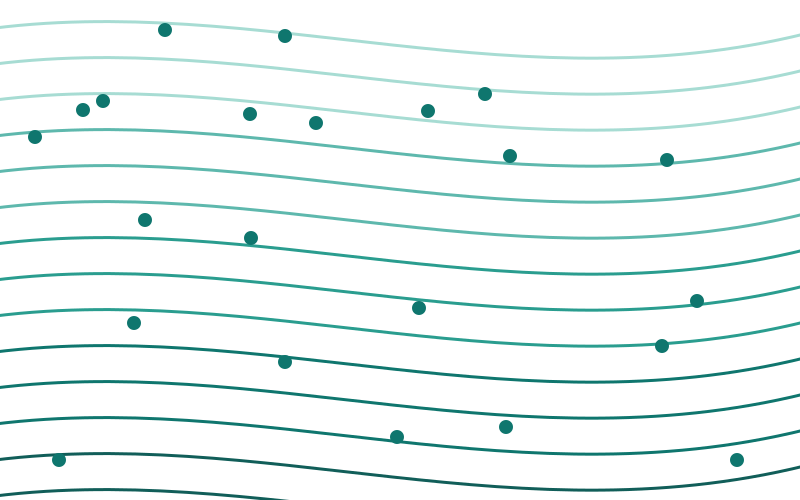
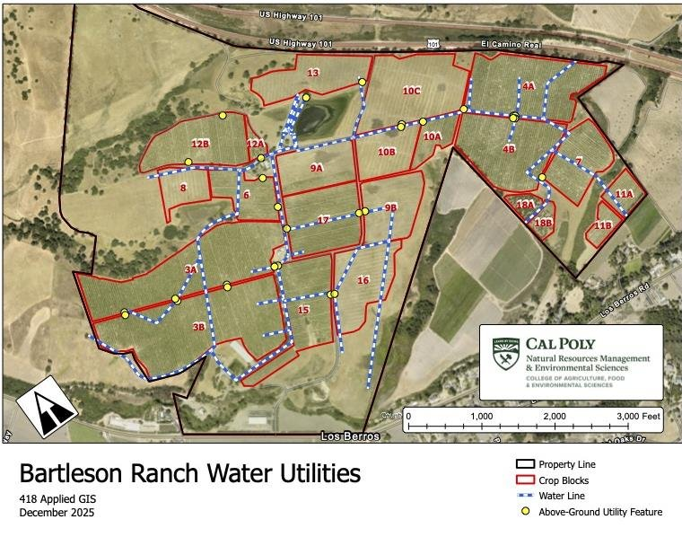
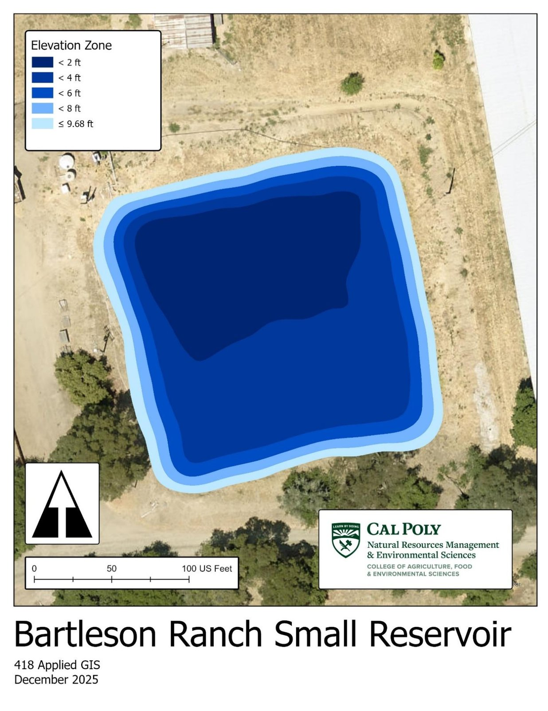
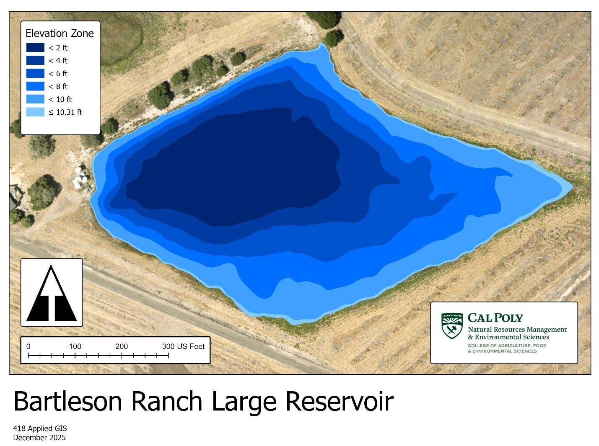
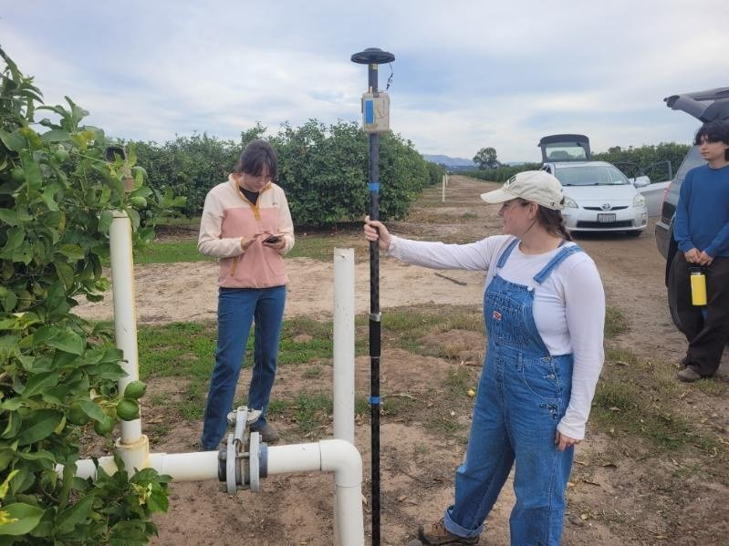
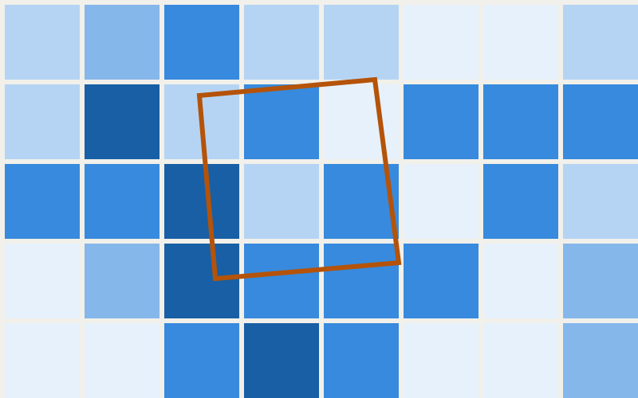
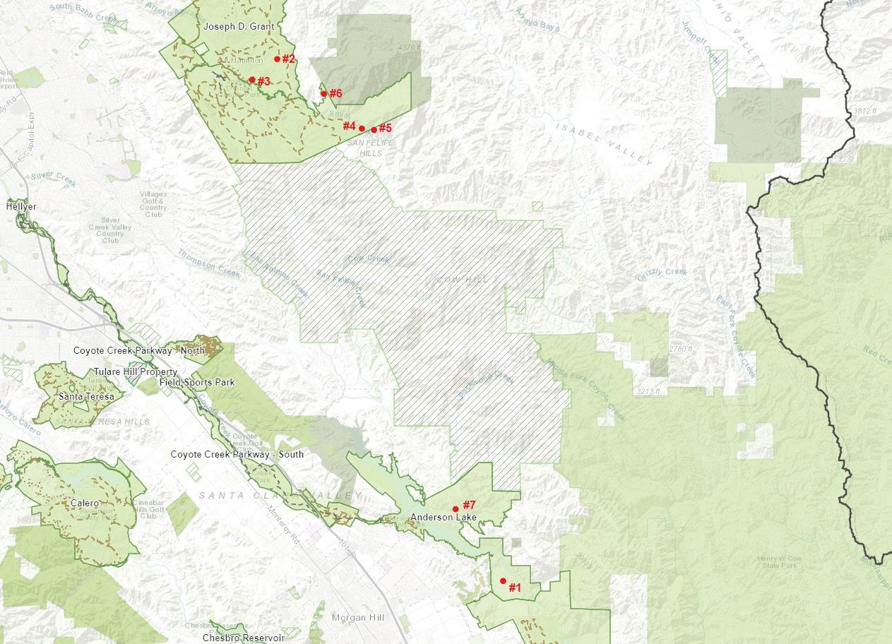
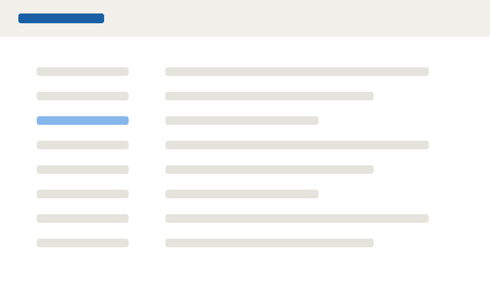

Groundwater elevation contours
A repeatable workflow I prototyped and pitched to my team: 25 years of well records interpolated in R into 5-year contour surfaces, shown in a time-enabled web map.

A repeatable workflow I prototyped and pitched to my team: 25 years of well records interpolated in R into 5-year contour surfaces, shown in a time-enabled web map.

Surveyed reservoir depth and utility valves with an RTK GNSS receiver, georeferenced a 30-year-old paper utility map, and calculated reservoir storage capacity. I did all the georeferencing and made the results maps.




A web tool for estimating crop water demand: draw a field, pick a crop and month, and compare climate scenarios and blue versus green water.

Located and assessed seven milkweed populations that support the Western monarch, then recommended site-specific protection and a fencing plan with cost comparison.

Revising and expanding an open-source curriculum site for introductory GIS, with every lesson taught in both QGIS and ArcGIS Pro.